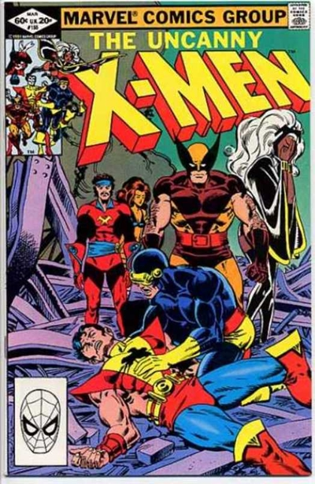
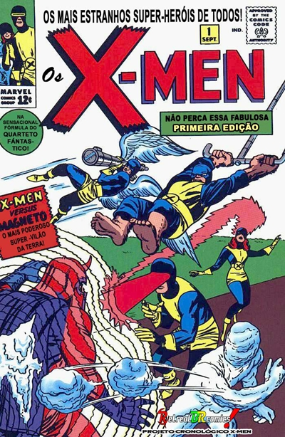
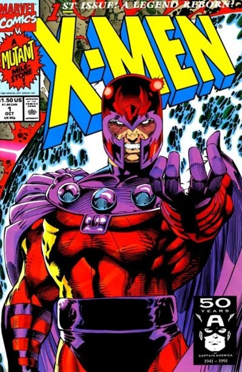
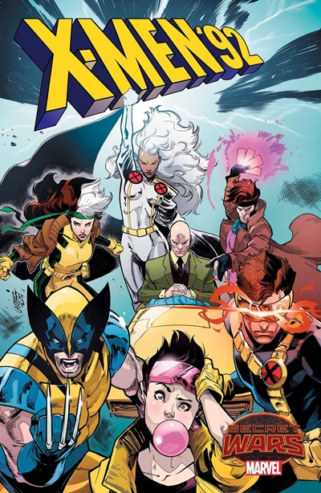

Grupo de heróis da editora Marvel, criado com o objetivo de seguir a linha do “Quarteto Fantástico”, cuja trajetória bem sucedida vinha desde 1961. A idéia inicial era que os personagens já nascessem com os seus poderes e com o tempo passariam a manifestá-los, surgindo assim a idéia dos mutantes. Na HQ de estréia, cinco jovens com poderes especiais são tutelados pelo Professor X, um sábio e rico filantropo que, secretamente, também é um mutante, que perdera os cabelos na juventude e ficara preso em uma cadeira de rodas. O Professor, em sua isolada mansão em Nova York, ensina a seus alunos como lidar e usar seus talentos em favor da humanidade, ameaçada por outros mutantes, liderados pelo malígno Magneto. A existência dos X-Men é mantida em segredo, e os alunos do Professor usam máscaras, para não serem identificados pelos civis, que temem as “aberrações”.
Na verdade, um protótipo dessa história já tinha sido publicado quatro anos antes pela própria Marvel, numa história chamada “The mutants and me” (“Os mutantes e eu”, no gibi “Tales of Suspense” n° 6). Na trama dessa historieta de 1959 (editada na ocasião por Stan Lee e desenhada por Joe Sinnott), um homem tenta convencer um amigo que mutantes com superpoderes estão infiltrados entre nós.
Lee nunca confirmou oficialmente, mas é sabido que suas histórias envolvendo mutantes foram inspiradas no livro de 1953 de Wilmar Shiras, “Children of the atom”, que apresentava o conceito de uma escola com jovens mutantes temidos pela humanidade. A expressão “filhos do átomo” sempre esteve ligada aos X-Men.
Algumas formações:
Formação Original (1963): Ciclope, Garota Marvel, Fera, Anjo e Homem de Gelo. Contou, posteriormente, com a participação de Polaris e Destrutor.
Novos X-Men (1975): Wolverine, Tempestade, Colossos, Noturno, Solaris, Pássaro Trovejante e Banshee. Depois com a morte de Pássaro Trovejante e saíde de Solaris entraram Ciclope, Jean Grey e Kitty Pride.
Terceira Formação: Wolverine, Tempestade, Colossos, Noturno, Vampira, Ciclope e Kitty Pride
Quarta Formação: Wolverine, Tempestade, Vampira, Cristal, Longshot, Destrutor e Psylocke.
|  |  |
|  |  |